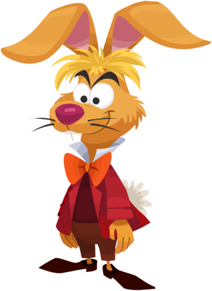
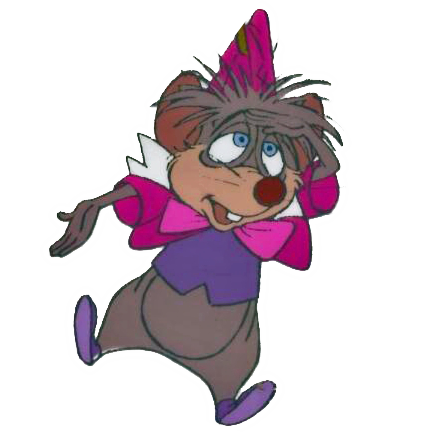
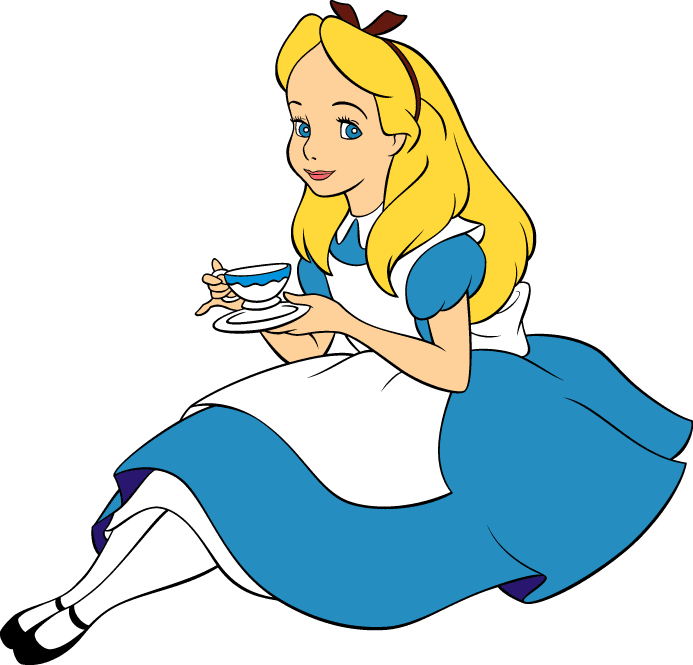
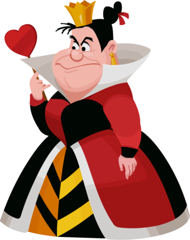

EL SOMBRERERO LOCO
Datos personales
Ocupación
- Sombrerero
- Animador de fiestas
Amigos
La Liebre de Marzo, es un conejo bípedo de pelaje anaranjado.
El Lirón es un pequeño ratón que siempre está durmiendo.
El Gato de Cheshire.
Alicia.
Enemigos
La Reina Roja.
Personalidad
- Excéntrico, hilarante, hiperactivo y un poquito loco.
- Obsesionado con la hora del té y las fiestas de té.
- También me podrían considerar generoso, ya que invito a desconocidos a tomar el té.
Mi actitud es muy variable.
Apariencia
Soy un hombre mayor con el pelo canoso, de estatura baja, nariz grande y voz cómica. Me gusta vestir un saco de cuello blanco, una camisa verde oscuro con un par de botones, un moño celeste y sobre mi cabeza un enorme sombrero verde.
Vivo en
El país de las maravillas.